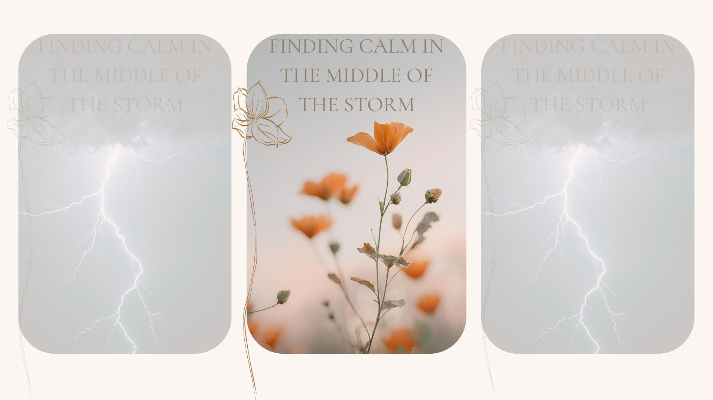

Understanding Anxiety
Finding calm in the middle of the storm
Have you ever felt your heart race for no obvious reason? Maybe your mind jumps from one "what if" to another, or you find yourself feeling restless, tense, and overwhelmed even when everything seems okay on the outside.
If that sounds familiar, you're not alone.
Anxiety is one of the most common mental health experiences. While it can feel isolating, anxiety is not a personal weakness—it is your body's way of trying to protect you.
What Is Anxiety?
Anxiety is your body's natural response to stress or perceived danger. Think of it as an internal alarm system designed to keep you safe.
When your brain senses a threat, it activates the fight, flight, or freeze response by releasing stress hormones.
🌿 Remember
Anxiety is trying to protect you—it isn't trying to hurt you.
Common Signs of Anxiety
- Racing thoughts
- Excessive worrying
- Trouble concentrating
- Restlessness
- Muscle tension
- Difficulty sleeping
- Increased heart rate
- Feeling overwhelmed
Why Anxiety Feels So Real
Our brains are designed to detect danger. Anxiety can convince us that something terrible is about to happen—even when we are safe.
Thoughts are not facts.
Learning to notice anxious thoughts without immediately believing them is one of the most helpful skills you can develop.
Gentle Ways to Calm Your Nervous System
- Practice slow breathing: inhale for 4 counts, exhale for 6.
- Try the 5-4-3-2-1 grounding exercise.
- Take a short walk outside.
- Listen to calming music.
- Journal your thoughts.
- Create a comforting nighttime routine.
Build Calm Through Daily Habits
- Prioritize quality sleep.
- Stay hydrated.
- Spend time outdoors.
- Limit doom scrolling.
- Celebrate small victories.
💛 Cozy Reset Challenge
Take five minutes today just for yourself.
Light a candle. Sip your favorite tea. Write down one thing you are grateful for. Take a slow breath.
Small moments of calm create lasting change.
You Are More Than Your Anxiety
Anxiety may be part of your story, but it is not your identity.
Healing is not about eliminating anxiety completely—it is about learning to respond with compassion, confidence, and patience.
Continue Your Cozy Reset
Explore more mindfulness tools, self-care inspiration, and wellness resources.
Visit Our Shop